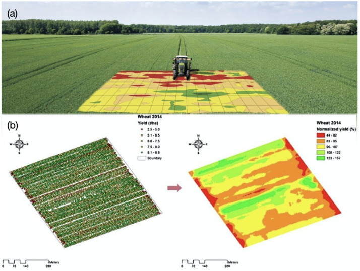
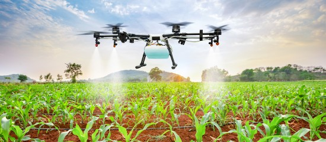
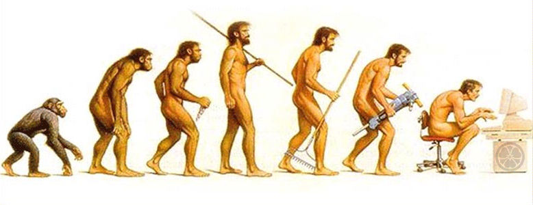

Une agriculture pilotée par les données : utopie ou dystopie ?
De bon matin, vous prenez votre bol de céréale favori produit par des algorithmes certifiés sous les airs de votre playlist détente matinale préférée. Et oui, voilà à quoi pourrait ressembler un futur pas si lointain dans lequel votre quotidien, et plus particulièrement votre alimentation, serait partiellement voire entièrement pilotée par les données. Le big data et ses promesses prennent de plus en plus d’importance et rallient sans cesse, petit à petit des domaines à leurs causes, renforçant encore et encore l’aura de primauté émanant du secteur.
Toutefois, un tel avenir automatisé est-il souhaitable ? En effet, la révolution du numérique est déjà en marche. On sait déjà qu’une quantité phénoménale de données utilisateurs transitent à travers les plateformes de traitement à des vitesses folles. Et puis, les algorithmes toujours plus complexes et hermétiques à notre compréhension dictent un peu plus chaque jour nos vies. Souhaitons-nous réellement confier à de tels algorithmes / groupes le monopole de nos données et de la production de ce qui fait notre composition corporelle ? Souhaitons nous être le produit d’un ensemble de calculs logiques et rationnels et abandonner à ces automates notre technique et notre savoir-faire, produit de notre culture et de notre expérience jusqu’alors ? Voilà les questions auxquelles nous allons tenter d’apporter une réponse aujourd’hui, le tout assimilé au domaine de l’agriculture. Un domaine au centre de bien des enjeux.
I. L’agriculture un domaine au cœur d’enjeux planétaire
Commençons tout d’abord par un petit rappel nécessaire pour contextualiser la situation.
« Finis ton assiette », « arrête de gaspiller » vous avez très certainement déjà entendu ces énoncés, peut-être même les avez-vous vous-même prononcé. Loin de moi l’idée de vous faire la leçon une fois de plus rassurez-vous. En réalité, ces phrases représentent parfaitement l’un des enjeux premiers auquel se confronte l’agriculture de nos jours, et celles et ceux qui l’ont prononcé l’ont bien compris. L’enjeux iconique, ancestrale, immémorial et historique de l’agriculture : l’enjeux économique. En bref, subvenir aux besoins de la population mondiale. Ce défi est déjà un challenge a part entière pour l’agriculture. En effet, elle ne l’a encore jamais atteint et reste un incontournable pour le domaine.
Et ce n’est pas tout, l’agriculture se doit aussi d’être en phase avec les écosystèmes avec lesquels elle interagit. Mais aussi de limiter son apport en pesticide, son empreinte carbone et son impact sur les contraintes environnementales actuelles dans une société qui y prête de plus en plus attention. En définitive : l’enjeux environnemental. Et enfin, il s’agit de pouvoir produire pour tous et chacun selon les caractéristiques individuelles et communes de tous. Manger selon les envies, selon l’âge, le milieu social, le lieu etc… S’adapter aux contraintes de prix, de qualité et de quantité souhaitée de chacun. On parle ici de l’enjeux social. Ainsi, il est question de savoir si le numérique peut nous aider à répondre à ces problématiques contemporaines. Dans quelle mesure c’est le cas, et de prévoir les impacts et les points de ruptures à surveiller lors de la mise en application.
II. Les apports du numériques en agriculture
Les bénéfices du numérique dans l’agriculture sont indéniables et les exemples d’applications sont toujours plus divers et variés.
L’optimisation de l’utilisation des ressources naturelles, réduction d’utilisation des pesticides, amélioration du bien être animal, amélioration de la production, réduction de la pénibilité du travail, amélioration de la réactivité, de la rapidité d’exécution et de la détection des anomalies, meilleure gestion des risques, meilleure gestion du marché... Voilà une poignée des promesses faîtes par le numérique et notamment l’intelligence artificielle réalisant des exploits toujours plus impressionnants.
Une multitude d’outils d’aides à la décision, à la perception et à l’action sont déjà disponibles aux agriculteurs : des capteurs embarqués, des drones, des satellites, robots de traites.
Vous pouvez retrouver l’ensemble des détails et informations concernant les applications et des outils de l’agriculture numérique ici (insérer un lien interne). Bref, le pilotage de l’agriculture par les données permet d’améliorer le rendement des cultures et d’améliorer la rentabilité des parcelles tout en assurant l’amoindrissement des impacts environnementaux des exploitations agricoles sur les écosystèmes environnants. C’est de cette manière qu’elle contribue à la résolution des enjeux auxquels se confrontent l’agriculture faisant d’elle, un bénéfice incontournable pour l’agriculture.
III. Les limites du numérique et les controverses auxquelles elle fait face
L’agriculture numérique est certes un domaine prometteur avec des possibilités telles que nous ne pouvons les imaginer, mais il ne faut pas oublier que nous n’en sommes qu’aux prémices d’une nouvelle ère. Beaucoup de doutes et de questionnement planent sur le domaine. Ces évolutions récentes et rapides de la technologie vers des domaines dans lesquels on ne s’attendait pas à la trouver font se poser les questions de l’éthique, de la responsabilité, de la juridiction et du pouvoir. Jusqu’où faire confiance à l’intelligence artificielle ? Et si elle se trouve face à des conflits d’intérêts auxquels l’être humain n’a pas encore eu à faire face ? Comment réagirait-elle ?
Et oui, selon des scientifiques tels que Stephen Hawkings, Bill Gates ou Elon Musk l’évolution soudaine et rapide des technologies pourraient s’avérer dangereux pour l’Homme. Cathy O’Neil mathématicien à Harvard puis au MIT montre que les machines s’accaparent de plus en plus les décisions de société et qu’une erreur de modélisation mathématique pourraient être la cause du renforcement des discriminations sociales. De plus ces modèles sont souvent incontestés, non réglementés et opaques. Laisser un tel pouvoir que de produire le fruit de l’énergie nourrissant nos tissus à une telle technologie pourrait être encore plus dévastateur.
De plus, que faire de l’autonomie de l’agriculteur ? Que faire si l’agriculteur ne sait plus reconnaître les marqueurs biologiques tant il s’est concentré sur les marqueurs numériques ? Quand on sait que l’innovation et l’invention sont le fruit des transgressions des règles, dans un monde où les machines restent fidèles à leurs algorithmes, que vont-elles devenir ? Ne risque-t-on pas de privilégier la culture et l’élevage d’espèces pour lesquelles il existe des systèmes numériques et délaisser les autres comme cela avait été le cas pour les vaches normandes ?
Là se situe la controverse éthique, responsable et juridique de la donnée agricole. En somme, pléthore de doutent planent sur le sujet et il faudra surveiller de près le devenir de l’agriculture pour contrôler et intégrer au mieux son évolution au sein des problématiques humaines actuelles.
IV. Conclusion
D’une part l’agriculture numérique est source de rêverie et d’espoir. Que ce soit grâce à ses possibilités économiques, ses capacités environnementales et son potentiel social elle semble être un parfait allié pour aider l’humanité à répondre aux enjeux de taille auxquelles elle doit faire face dans les décennies à venir.
D’un autre côté, elle pourrait devenir une source d’angoisse pour certains voire un cauchemar pour d’autres tant le pouvoir que l’on s’apprête à lui confier est grand. Beaucoup de doutes subsistent et des questions émergent au fur à mesure que le temps passe. Jusqu’où laisser faire la machine, qu’en est-il de l’autonomie de décisions de l’Homme ? Qu’en est-il de la fiabilité des algorithmes ? Faut-il passer ce point de rupture ?
L’homo sapiens a toujours progressé et évolué grâce à son autonomie de décision et à sa capacité à faire les bons choix quand il le fallait. Ainsi léguer ce pouvoir à la machine fera-t-il de lui quelqu’un de meilleur ou le conduira-t-il vers la dépendance et la soumission décisionnelle totale ?
Bibliographie : P. JEANNAUX « Agriculture numérique : quelles conséquences sur l’autonomie de la décision des agriculteurs » Agronomie environnement & sociétés, vol. Numéro 8, p. Numéro 13, juin 2018. aes_vol8_n1_dossier_complet.pdf (agronomie.asso.fr)